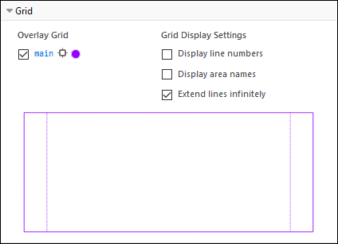

Lesson 4 covered left-borders, now in Lesson 5 we're to create a double border. I created three background graphics for this page. The left border, the right border, and a tiny tile for the background to make sure it matches the small piece of background on the inner edge of the border graphics.
The original page was set up in a table with three columns, one for each part of the border. It used transparent gifs and for some reason, it refused to cover the entire height of the page. To update, I used the new CSS grid feature.
You can see what I'm talking about with the following image I captured using Firefox DevTools. As of this writing in May of 2019, Firefox is the only browser with a grid inspector that lets you look at the layout of your CSS grids. It's really useful. (It is only fair to tell you that I am the Firefox Developer Content Manager for MDN Web Docs, but I used their development tools before I got the job.)
As you can see from the purple outlines, I have three columns: left border, content, and right border. The nice thing about grid is that the center solumn will automatically become wider and narrower to fit its content.
The design in the border is yet another piece out of one of my clip art collections. The thin gold border and the shadows were aded by me using Corel PaintShop Pro X and the Flaming Pear filter Super BladePro. I created the title, the buttons, and the bar by taking pieces from the diamond part of the border which I cut out and resized appropriately as I needed it.